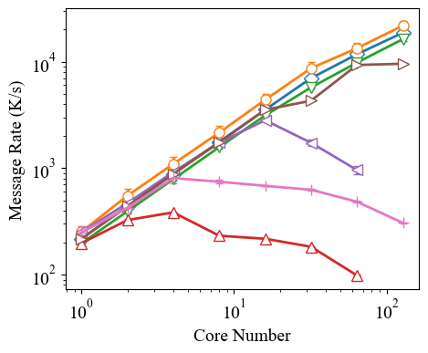
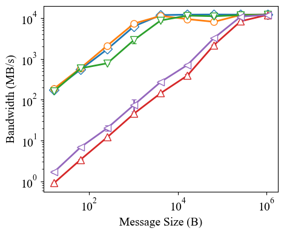
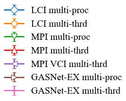

Table of Contents
LCI
A Lightweight Communication Interface for Asynchronous Multithreaded Systems

Documentation
See here for quick start, tutorial, API documentation, and more.
Overview
LCI is designed to be an efficient communication library for asynchronous communications in multithreaded environments. It also serves as a research tool to explore design choices for such libraries. It has the following major features:
- a unified interface that supports flexible combinations of all common point-to-point communication primitives, including send-receive, active messages, and RMA put/get (with/without notification), and various built-in mechanisms to synchronize with pending communications, including synchronizers, completion queues, function handlers, and completion graphs.
- a flexible interface offers both a simple starting point for users to program and a wide range of options for them to incrementally fine-tune the communication resources and runtime behaviors, minimizing potential interference between communication and computation.
- a lightweight and efficient runtime optimized for threading efficiency and massive parallelism. The runtime is built with a deep understanding of low-level network activities and employs optimizations such as atomic-based data structures, thread-local storage, and fine-grained nonblocking locks.
LCI is implemented as a C++ libraries with two major network backends: libibverbs for InfiniBand/RoCE and libfabric for Slingshot-11, Ethernet, shared memory, and other networks.
Performance Showcase



Results of multi-pair ping-pong microbenchmarks measuring message rate (8-byte messages, 100k steps) and bandwidth (64-thread, 1k steps) on SDSC Expanse (InfiniBand). It compares LCI with other state-of-the-art libraries, including MPI (MPICH), MPI with the VCI extension, and GASNet-EX. The experiments are either run with one process per core (multi-proc) or with one process per node (one thread per core, multi-thrd).
For the first time known to us, multithreaded communication catches up with multi-process communication.
Relevant Publications
- Yan, Jiakun, and Marc Snir. "Contemplating a Lightweight Communication Interface for Asynchronous Many-Task Systems." arXiv preprint arXiv:2503.15400 (2025). A short workshop paper describing the high-level interface design of LCI (version 2, the current version).
- Yan, Jiakun, Hartmut Kaiser, and Marc Snir. "Understanding the Communication Needs of Asynchronous Many-Task Systems --A Case Study of HPX+ LCI." arXiv preprint arXiv:2503.12774 (2025). Paper about integrating LCI (version 1) into HPX.
- Mor, Omri, George Bosilca, and Marc Snir. "Improving the scaling of an asynchronous many-task runtime with a lightweight communication engine." Proceedings of the 52nd International Conference on Parallel Processing. 2023. Paper about integrating LCI (version 1) into PaRSEC.